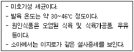

제빵기능사 (2007-09-16 기출문제)
1과목: 제조이론
1. 쿠키의 퍼짐이 나빠지는 원인이 아닌 것은?
- 높은 오븐 온도
- 과도한 믹싱
- 입자가 고운 설탕 사용
- 알칼리성 반죽
(정답률: 52%)

2. 생산 공장시설의 효율적 배치에 대한 설명 중 적합하지 않은 것은?
- 작업용 바닥면적은 그 장소를 이용하는 사람들의 수에 따라 달라진다.
- 판매장소와 공장의 면적배분(판매3:공장1)의 비율로 구성되는 것이 바람직하다.
- 공장의 소요면적은 주방설비의 설치면적과 기술자의 작업을 위한 공간면적으로 이루어진다.
- 공장의 모든 업무가 효과적으로 진행되기 위한 기본은 주방의 위치와 규모에 대한 설계이다.
(정답률: 85%)
3. 반죽의 비중에 대한 설명이 틀린 것은?
- 비중이 낮을수록 공기 함유량이 많아서 제품이 가볍고 조직이 거칠다.
- 비중이 높을수록 공기 함유량이 적어서 제품의 기공이 조밀하다.
- 비중이 같아도 제품의 식감은 다를 수 있다.
- 비중은 같은 부피의 반죽무게를 같은 부피의 계란무게로 나눈 것이다.
(정답률: 75%)
4. 케이크 도넛에 가장 알맞은 튀김 온도는?
- 150℃
- 180℃
- 210℃
- 230℃
(정답률: 86%)
5. 반죽무게를 구하는 식은?
- 틀부피×비용적
- 틀부피+비용적
- 틀부피÷비용적
- 틀부피-비용적
(정답률: 82%)
6. 흰자를 거품내면서 뜨겁게 끓인 시럽을 부어 만든 머랭은?
- 냉제 머랭
- 온제 머랭
- 스위스 머랭
- 이탈리안 머랭
(정답률: 79%)
7. 반죽형 케이크 반죽을 부피 위주로 만들 때 사용할 믹싱 방법은?
- 1단계법
- 설탕/물법
- 블렌딩법
- 크림법
(정답률: 64%)
8. 다음 제품 중 반죽의 pH가 가장 낮을 때 좋은 제품이 나오는 것은?
- 엔젤 푸드 케이크
- 데블스 푸드 케이크
- 초콜릿 케이크
- 옐로 레이어 케이크
(정답률: 73%)
9. 언더 베이킹(under baking)에 대한 설명으로 틀린 것은?
- 낮은 온도에서 굽는 것이다.
- 중앙부분이 익지 않는 경우가 많다.
- 윗면이 갈라지기 쉽다.
- 속이 거칠어지기 쉽다.
(정답률: 68%)
10. 제과 제품을 평가하는데 있어 외부 특성에 해당하지 않는 것은?
- 부피
- 껍질색
- 기공
- 균형
(정답률: 75%)
11. 모카 아이싱(Mocha lcing)의 특징을 결정하는 재료는?
- 커피
- 코코아
- 초콜릿
- 분당
(정답률: 89%)
12. 스펀지케이크 제조시 덥게 하는 방법으로 사용할 때 계란과 설탕은 몇 도로 가온하여 믹싱하는 것이 가장 적당한가?
- 30℃
- 43℃
- 55℃
- 70℃
(정답률: 77%)
13. 다음 중 반죽의 얼음사용량 계산공식으로 옳은 것은?
- 얼음={물사용량×(수돗물온도-사용수온도)}/80+수돗물온도
- 얼음={물사용량×(수돗물온도+사용수온도)}/80+수돗물온도
- 얼음={물사용량×(수돗물온도×사용수온도)}/80+수돗물온도
- 얼음={물사용량×(계산된물온도-수돗물온도)}/80+수돗물온도
(정답률: 66%)
14. 설탕공예용 당액 제조시 고농도화된 당의 결정을 막아주는 재료는?
- 중조
- 물엿
- 포도당
- 베이킹파우더
(정답률: 51%)
15. 다음 중 달걀노른자를 사용하지 않는 케이크는?
- 파운드 케이크
- 엔젤 푸드 케이크
- 소프트 롤케이크
- 옐로 레이어 케이크
(정답률: 74%)
16. 다음 중 스펀지 발효를 마친 반죽의 적정 pH는?
- pH 2.8
- pH 4.8
- pH 6.8
- pH 8.8
(정답률: 69%)
17. 오븐에서의 부피 팽창 시 나타나는 현상이 아닌 것은?
- 탄산가스가 발생한다.
- 발효에서 생긴 가스가 팽창한다.
- 약 80℃에서 알코올이 증발한다.
- 약 90℃까지 이스트의 활동이 활발하다.
(정답률: 70%)
18. 스트레이트법에서 1차 발효 시 발효 상태를 파악하기 위해 손가락으로 눌렀을 때 가장 발효상태가 좋은 것은?
- 누른 자국이 점점 커진다.
- 반죽 부분이 퍼진다.
- 누른 부분이 살짝 오므라든다.
- 누른 부분이 옆으로 퍼져 함몰한다.
(정답률: 83%)
19. 원가에 대한 설명 중 틀린 것은?
- 기초원가는 직접 노무비, 직접 재료비를 말한다.
- 직접원가는 기초원가에 직접 경비를 더한 것이다.
- 제조원가는 간접비를 포함한 것으로 보통 제품의 원가라고 한다.
- 총원가는 제조원가에서 판매비용을 뺀 것이다.
(정답률: 64%)
20. 팬 오일의 구비조건이 아닌 것은?
- 높은 발연점
- 무색, 무미, 무취
- 가소성
- 항산화성
(정답률: 50%)
2과목: 재료과학
21. 냉동반죽의 특성에 대한 설명 중 틀린 것은?
- 냉동반죽에는 이스트 사용량을 늘인다.
- 냉동반죽에는 당, 유지 등을 첨가하는 것이 좋다.
- 냉동 중 수분의 손실을 고려하여 될 수 있는 대로 진반죽이 좋다.
- 냉동반죽은 분할량을 적게 하는 것이 좋다.
(정답률: 55%)
22. 식빵의 일반적인 비용적은?
- 0.36㎤/g
- 1.36㎤/g
- 3.36㎤/g
- 5.36㎤/g
(정답률: 69%)
23. 스펀지/도법으로 제빵시 본반죽 만들 때의 온도로 가장 적합한 것은?
- 22℃
- 27℃
- 33℃
- 40℃
(정답률: 80%)
24. 단백질 분해효소인 프로테아제(protease)를 햄버거빵에 첨가하는 이유로 가장 알맞은 것은?
- 저장성 증가를 위하여
- 팬 흐름성을 좋게 하기 위하여
- 껍질색 개선을 위하여
- 발효 내구력을 증가시키기 위하여
(정답률: 46%)
25. 반죽 믹싱의 목적에 적합하지 않는 것은?
- 반죽의 신전성과 탄력성 부여
- 물의 흡수력 증감 조절
- 재료의 혼합
- 글루텐 형성으로 빵의 내상 개선
(정답률: 55%)
26. 일반적인 바게트(baguette)의 분할 무게로 가장 적합한 것은?
- 50g
- 200g
- 350g
- 600g
(정답률: 68%)
27. 어떤 제품을 다음과 같은 조건으로 구웠을 때 제품에 남는 수분이 가장 많은 것은?
- 165℃ 45분간
- 190℃에서 35분간
- 2⑤℃에서 40분간
- 220℃에서 20분간
(정답률: 57%)
28. 식빵의 냉각법 중 자연 냉각시 일반적으로 소요되는 시간은?
- 30분
- 1시간
- 3시간
- 6 시간
(정답률: 62%)
29. 다음 중 제2차 발효실의 온도와 습도로 적합한 것은?
- 온도 27~29℃, 습도 90~100%
- 온도 38~40℃, 습도 90~100%
- 온도 38~40℃, 습도 80~90%
- 온도 27~29℃, 습도 80~90%
(정답률: 72%)
30. 다음 중 제품 특성상 일반적으로 노화가 가장 빠른 것은?
- 단과자빵
- 카스테라
- 식빵
- 도넛
(정답률: 74%)
3과목: 영양학
31. 제과에 많이 쓰이는 “럼주”는 무엇을 원료로 하여 만드는 술인가?
- 옥수수 전분
- 포도당
- 당밀
- 타피오카
(정답률: 78%)
32. 다음 중 단순단백질이 아닌 것은?
- 알부민
- 글루코프로테인
- 글로불린
- 히스톤
(정답률: 39%)
33. 압착 이스트의 고형분의 함량으로 가장 적합한 것은?
- 10%
- 30%
- 50%
- 70%
(정답률: 57%)
34. 수중 유적형(o/w)식품이 아닌 것은?
- 우유
- 마가린
- 마요네즈
- 아이스크림
(정답률: 54%)
35. 빵 제조시 연수를 사용할 경우 적절한 조치는?
- 끓여서 여과
- 약산 처리
- 이스트푸드량 증가
- 소금량 감소
(정답률: 67%)
36. 밀가루 반죽의 점탄성을 측정하는 기구는?
- 페네트로미터
- 유니버셜미터
- 오스왈드비스코미터
- 패리노그래프
(정답률: 87%)
37. 단맛의 강도 순서로 옳은 것은?
- 과당 > 설탕 > 포도당 > 맥아당
- 맥아당 > 과당 > 설탕 > 포도당
- 설탕 > 과당 > 포도당 > 맥아당
- 포도당 > 설탕 > 과당 > 맥아당
(정답률: 81%)
38. 이자액에서 분비되는 단백질 분해효소는?
- 프로테아제
- 펩신
- 트립신
- 레닌
(정답률: 35%)
39. 휘핑크림과 아이스크림믹스의 유화안정을 위한 안정제와 거리가 먼 것은?
- 가티검(ghatti gum)
- 구아검(guar gum)
- 로카스트빈 검(locust bean gum)
- 잔탄검(xanthan gum)
(정답률: 36%)
40. 맥아당은 이스트의 발효과정 중에 효소에 의해 어떻게 분해되는가?
- 포도당+포도당
- 포도당+과당
- 포도당+유당
- 과당+과당
(정답률: 71%)
41. 호밀빵 제조시 호밀을 사용하는 이유 및 기능과 거리가 먼 것은?
- 독특한 맛 부여
- 조직의 특성 부여
- 색상 향상
- 구조력 향상
(정답률: 61%)
42. 우유 중에 가장 많이 함유된 단백질은?
- 카제인
- 락토알부민
- 락토글로불린
- 혈청 알부민
(정답률: 84%)
43. 젤리를 제조하는데 당분 60~65%, 펙틴 1.0~1.5%일 때 가장 적합한 것은?
- pH1.0
- pH3.2
- pH7.8
- pH10.0
(정답률: 65%)
44. 빵에 쓰이는 유지의 지방산에 대한 설명 중 맞는 것은?
- 일반적으로 자연계에서 얻어지는 지방산은 탄소수가 홀수이며 직쇄상이다.
- 일반적으로 자연계에서 얻어지는 지방산은 탄소수가 짝수이며 직쇄상이다.
- 일반적으로 자연계에서 얻어지는 지방산은 탄소수가 홀수이며 환상이다.
- 일반적으로 자연계에서 얻어지는 지방산은 탄소수가 짝수이며 환상이다.
(정답률: 51%)
45. 어떤 케이크를 생산하는데 전란이 1000g 필요하다. 껍질 포함 60g짜리 달걀은 몇 개가 있어야 하는가?
- 17개
- 19개
- 21개
- 23개
(정답률: 59%)
46. 적혈구, 뇌세포, 신경세포의 주요 에너지원으로 혈당을 형성하는 당은?
- 과당
- 설탕
- 유당
- 포도당
(정답률: 83%)
47. 다음 중 수소를 첨가하여 얻는 유지류는?
- 쇼트닝
- 버터
- 라드
- 양기름
(정답률: 65%)
48. 하루 2400kcal를 섭취하는 사람의 이상적인 탄수화물의 섭취량은 약 얼마인가?
- 140~150g
- 200~230g
- 260~320g
- 330~420g
(정답률: 54%)
49. 칼슘의 흡수를 도와 골격 형성에 관계하는 비타민은?
- 비타민 A
- 비티만 B6
- 비타민 D
- 비타민 K
(정답률: 61%)
50. 단백질을 구성하는 기본 단위는?
- 아미노산
- 지방산
- 글리세린
- 포도당
(정답률: 70%)
4과목: 식품위생학
51. 경구전염병의 예방대책으로 잘못된 것은?
- 환자 및 보균자의 발견과 격리
- 음료수의 위생 유지
- 식품취급자의 개인위생 관리
- 숙주 감수성 유지
(정답률: 74%)
52. 세균의 형태학적 분류 명칭과 관계가 먼 것은?
- 사상균
- 나선균
- 간균
- 구균
(정답률: 52%)
53. 노로바이러스 식중독의 일반증상으로 틀린 것은?
- 잠복기 : 24~28시간
- 지속시간 : 7일 이상 지속
- 주요증상 : 설사, 탈수, 복통, 구토 등
- 발병률 : 40~70% 발병
(정답률: 50%)
54. 아래에서 설명하는 식중독 원인균은?

- 캠필로박터 제주니
- 바실러스 세레우스
- 장염비브리오
- 병원성 대장균
(정답률: 48%)
55. 다음 중 제1급 법정 전염병은?(2020년 01월 01일 개정된 규정 적용됨)
- 결핵
- 장티푸스
- 디프테리아
- 말라리아.
(정답률: 66%)
56. 경구전염병 중 바이러스에 의해 전염되어 발병되는 것은?
- 성홍열
- 장티푸스
- 홍역
- 아메바성 이질
(정답률: 46%)
57. 산화방지제로 쓰이는 물질이 아닌 것은?
- 중조
- BHT
- BHA
- 세사몰
(정답률: 46%)
58. 식품의 미생물에 의한 부패를 방지할 목적으로 사용되는 식품첨가물은?
- 산화방지제
- 팽창제
- 보존료
- 착향료
(정답률: 63%)
59. 트랜스지방에 대한 설명으로 틀린 것은?
- 부분경화유 생산 시 많게는 40% 정도가 생산된다.
- 섭취 시 인체 내 고밀도지단백질(HDL)이 많아진다.
- 엑스트라 버진 올리브유나 참기름과 같이 압착하는 유지에는 트랜스지방이 없다.
- 버터는 천연적으로 트랜스지방이 5% 정도 들어있다.
(정답률: 35%)
60. 화학적 식중독에 대한 설명으로 잘못된 것은?
- 유해색소의 경우 급성독성은 문제되나 소량을 연속적으로 섭취할 경우 만성독성의 문제는 없다.
- 인공감미료 중 싸이클라메이트는 발암성이 문제되어 사용이 금지되어 있다.
- 유해성 보존료인 포르말린은 식품에 첨가할 수 없으며 플라스틱 용기로부터 식품 중에 용출되는 것도 규제하고 있다.
- 유해성 표백제인 롱갈릿을 사용시 포르말린이 오래도록 식품에 잔류할 가능성이 있으므로 위험하다.
(정답률: 66%)